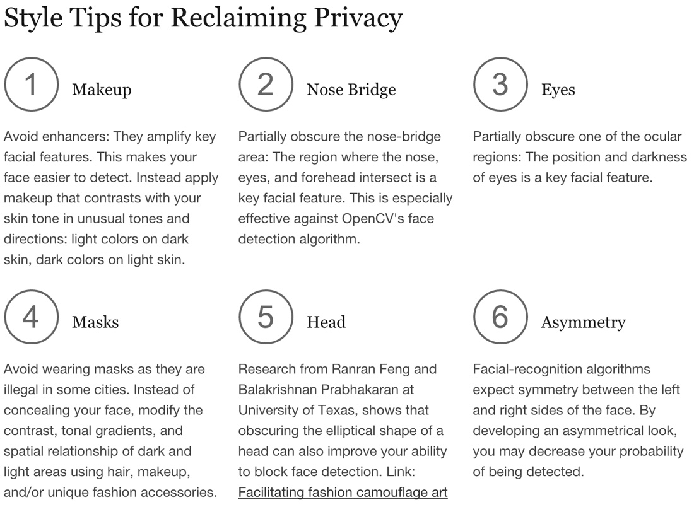
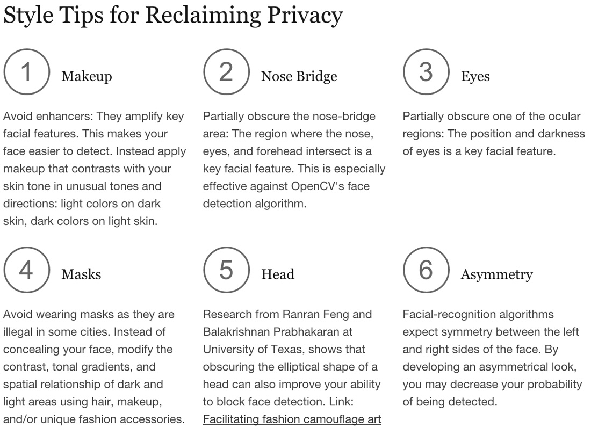

thwart facial detection with a couple clicks.
The Face Dazzler web application allows you a degree of protection against facial recognition technology online.
Facial recognition technology is pervasive, from street-level security cameras to friends tagging us on Facebook. It's also invasive – when our face is recognized, so is our identity.
One way around this is to avoid having our face recognized as a face in the first place.

Examples of hair and makeup styles that thwart facial detection, from CVDazzle.com

experiment with facial detection in real time
Detect and dazzle your face
Experiment with CV Dazzle methods
that circumvent facial detection

check for faces in photos
After you experiment with digital camouflage,
Check to see if you've successfully thwarted facial detection

learn more
Learn more about surveillance, facial recognition and facial detection
Including more about this site


 
